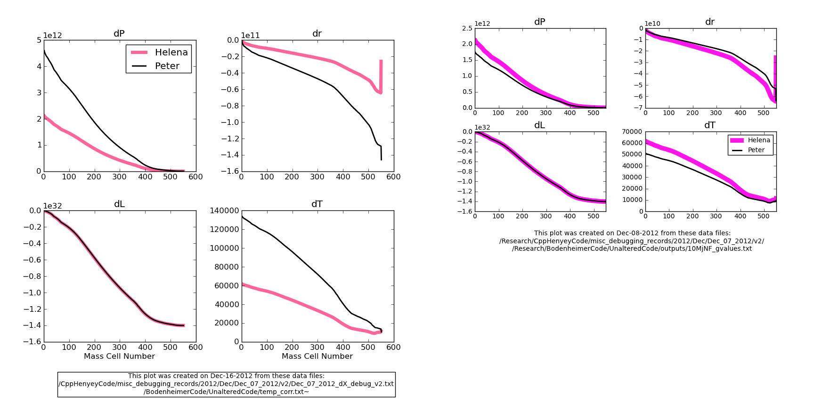

Date & Time: Dec. 16, 2012
Location: Campus
Computing context: /Desktop/Research/CppHenyeyCode, /Desktop/Research/BodenheimerCode/UnalteredCode/
From last time:
See how Peter's code handles the G3J calculations at the outer boundary.
The chunk of Peter's code that changes the quantity [L(jMax) - L(jMax-1)] happens just before the main program first calls the Henyey subroutine, and looks like this:
c call massflux(TIME,Zflux)
c if(konv.gt.0. or. MODEL.eq.1) then
c mode=999
c else
c mode=0
c call gridmov
c endif
It's the gridmov subroutine that's causing the change. Makes sense, b/c its job is to de/refine the mass cell size/structure to optimize the Henyey process.
There are two ways to debug this, and I'll try both next time:
Run Peter's code WITHOUT the pre-Henyey call to gridmov, and see how the CDEG and dX values it generates compare to Helena's results.
Make the starting model for Helena the 'refined' model that Peter's code uses after passing it through gridmov.
Today's work:
Run Peter's code WITHOUT the pre-Henyey call to gridmov, and see how the CDEG and dX values it generates compare to Helena's results.
Make the starting model for Helena the 'refined' model that Peter's code uses after passing it through gridmov.
For step 1, need to do the following:
Modify cdeg_debug2.f to NOT call the gridmov subroutine before calling Henyey
Run the simulation with dTime = 1 second
Capture the corrections (and CDEG values) outputs from the first Henyey iteration
Plot/compare them against the most recent Helena results (w/ dTime = 1 second)
If they agree, then woohoo!
If not, debug as necessary...
I can't even get
Peter's code w/ dTime = 0 to agree with the results it was giving
me before. This is frustrating. Will continue debugging this
tomorrow. Maybe it's got something to do w/ the cond_nab
calculations not being disabled??
Nope, that's not it. ARG!!!
Now, Peter's model produces dX values that are ~2.6x larger than they were before... WHY IS THIS HAPPENING??
To illustrate what's going on, see Figure 1. The part on the left is the stuff that Peter's code is spitting out now (compared to the Dec. 7 v2 Helena results). The part on the right is Peter's previous dX values plotted against the same Helena results.

Figure
1
For step 2, need to do the following:
Modify cdeg_debug2.f to CALL the gridmov subroutine before calling Henyey.
Run the simulation with dTime = 1 second
Have the main program print out the post-gridmov, pre-Henyey model
Capture that output
Plot/compare the starting models from Helena and post-gridmov Peter
Note what the relevant changes seem to have been
Another thing to check is how often gridmov alters the model in Peter's code as you let it go through multiple Henyey iterations on the way to convergence.
Also, take a look at the gridmov subroutine, and see how complicated it would be to also implement it in my code.